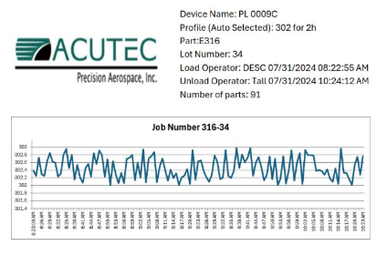
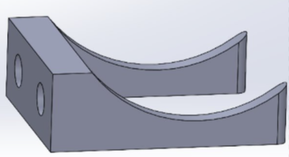

Explore my projects at
Acutec Precision Aerospace

Deburring Fixture Design and Fab
Manufacturing Engineering Intern @ Acutec Precision Aerospace

Skills Applied
Solidworks
GD&T
Welding
- Conceptualized and designed the fixture in SolidWorks for 180° rotation and full horizontal load support.
- Selected appropriate hinge and all necessary components to ensure smooth rotation, strength, and stability.
- Engineered the fixture to be sturdy enough to hold 20 lbs while maintaining rotational freedom.
- Custom-fabricated components and welded the fixture to meet design specifications.
- Collaborated with machinists to fabricate custom components and assemble the fixture according to design specifications.
Inspiration and Objective:
Process and Results:


Paint Oven Automation
Manufacturing Engineering Intern @ Acutec Precision Aerospace
Skills Applied
Python
Visual Studio Code
3D Printing
- Programmed the oven in Composer and enabled PLC-based data logging with Wi-Fi connectivity.
- Integrated a barcode scanner with the oven using a 3D-printed mount for operator input and job identification.
- Designed a barcode system linked to the job router, enabling traceability across all paint operations.
- Wrote a python script to automatically compile and export oven data into PDF reports.
- Authored detailed work instructions covering oven operation, barcode scanning, and data reporting.
Inspiration and Objective:
Process and Results:

